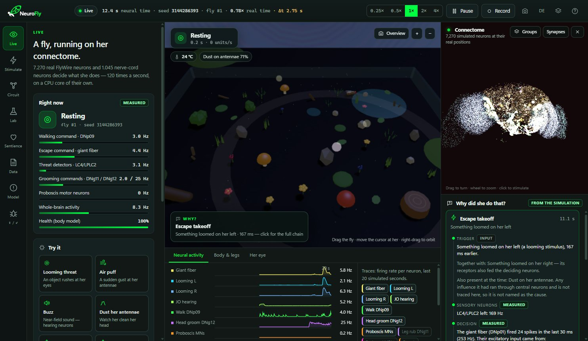
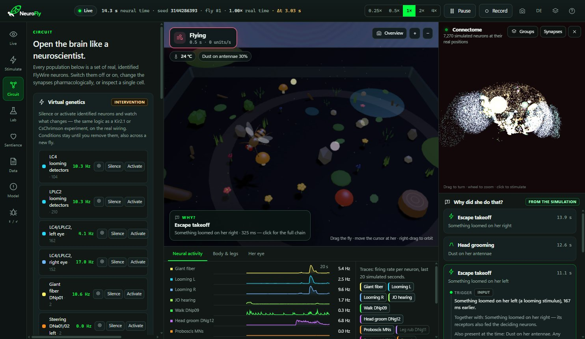
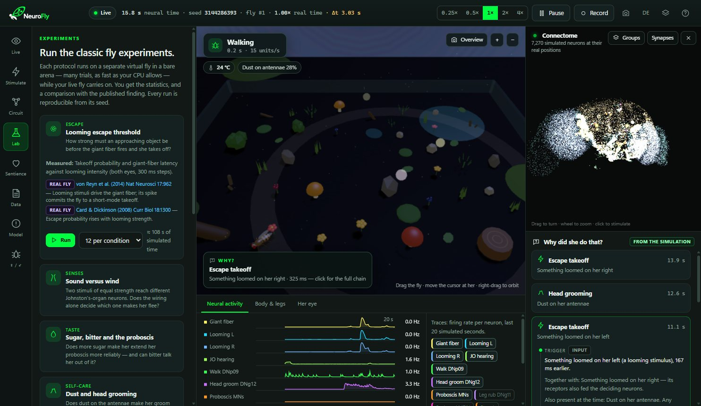
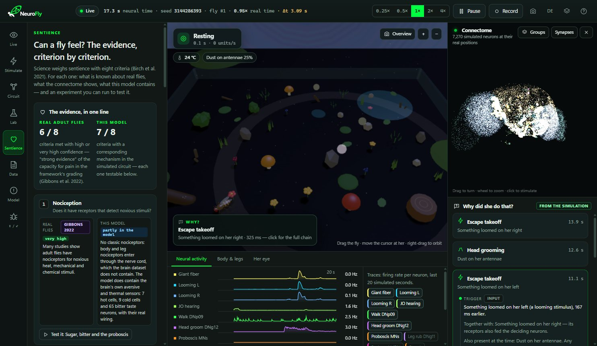
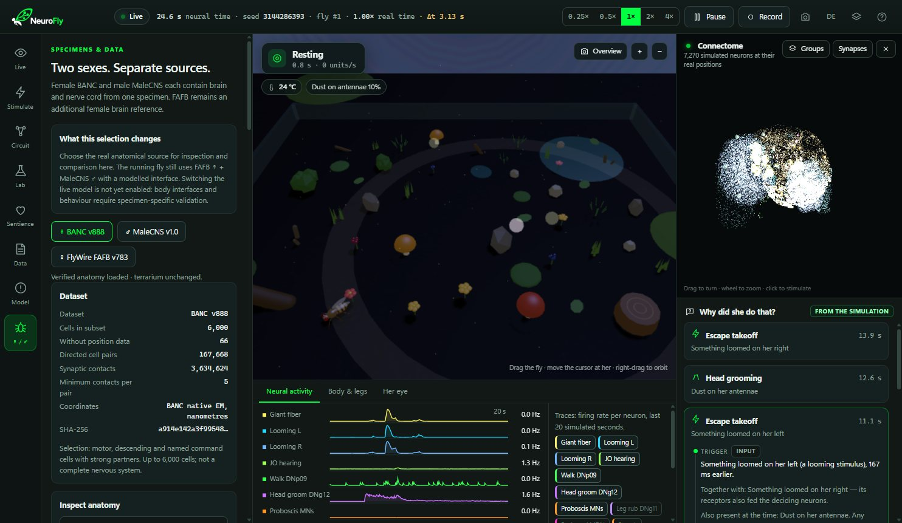

A fruit fly, simulated from the measured wiring of its nervous system.
NeuroFly runs 7,270 brain neurons from the FlyWire connectome and 1,045 nerve-cord neurons from MaleCNS in closed loop with a modelled body. She walks, grooms, tastes and escapes, and for every action you can see which neurons caused it. What is measured and what is modelled is always stated.
Film: NeuroFly’s simulated brain, every neuron at its measured FlyWire position. Each flash is a spike from a real model run; midway, a looming stimulus makes the giant fiber fire. Model activity, not a recording from a fly.

The wiring is measured. Everything else is a stated model.
A connectome records which neuron connects to which, and how strongly. It does not record how the cells behave in time. NeuroFly keeps the two apart: the wiring is used exactly as published, and whatever the connectome does not contain is a documented model component, labelled as such in the application.
Measured
Anatomy from electron microscopy
Neurons, their positions, cell types and synaptic connections come from peer-reviewed connectome releases. Nothing is tuned by hand to make a behaviour look right.
Modelled
Dynamics, senses and body as stated models
Leaky integrate-and-fire neurons, sensory transduction, a jointed body and its contact with the ground. Each is documented with its parameters and its limits.
Traced
Every action has a traceable cause
When the fly takes off, grooms or feeds, NeuroFly shows which input changed, which sensory neurons it reached, and which synapses drove the deciding neurons — from recorded spikes, not from a story.
Does it behave like a fly for the right reasons?
Classic findings from fly neuroscience, re-run as controlled in-silico experiments with the statistics shown. Where the model does not reproduce a finding, the Evidence page says so.
Looming escape
An abrupt loom triggers takeoff through the giant fiber — 50% threshold at loom intensity 0.14, 100% from 0.16, none at 0.12 and below. Silencing LC4 cuts giant-fiber spikes by 94%; silencing LC4 and LPLC2 together abolishes the escape.
Mechanosensory specificity
Wind does not trigger escape — 0/12 takeoffs, as in real flies, which stop rather than flee in wind. Only the auditory Johnston’s-organ neurons are wired to the giant fiber; that sound of equal strength drives it (12/12) is a prediction of the wiring.
Taste decisions
Sugar drives proboscis extension; bitter vetoes it — 88% extension at sugar 0.75 alone, 0% once bitter is added (Fisher p = 0.0014), from the measured gustatory pathways.
Self-care
Dust on the antennae triggers head grooming — 100% at full dust, 0% with the JO-F mechanosensors or the DNg12 command neurons silenced (Fisher p < 0.001).
In-silico pharmacology
Inhibition acts as a dose–response on escape — scaling all inhibitory synapses suppresses takeoff from 100% to 0%, half-maximal at 1.52× normal strength. A transmitter-class experiment, not a drug model.
Honest limits
Not every finding is reproduced — habituation, associative learning, thermal preference and three of ten activation phenotypes are not yet. They are listed with their data, because they define the next model work.
All ten benchmark experiments, figures, data and the verification suite →
One animal, from brain to nerve cord
Five short films of the BANC connectome — a complete brain-and-cord wiring diagram of a single female fly, and the dataset of NeuroFly’s next model stage. Select one to watch it with its original soundtrack.
Connectome: BANC v888, Bates, Phelps, Kim et al., Nature 656 (2026), doi:10.1038/s41586-026-10735-w; data doi:10.7910/DVN/7WTH1N, CC BY 4.0. Visualisation by NeuroFly: a selection of mapped cells and contact links; light pulses illustrate model activity and are not recorded neural firing. Original soundtrack.
Follow the work. New films and progress from the model, as it grows.
What it is for
Research: hypotheses before the wet lab
Silence or activate any identified cell type, change transmitter-class gains, and measure the behavioural consequence in hundreds of seeded trials — a fast way to ask which cells a circuit needs before designing the genetic experiment.
Teaching: circuits you can take apart
Students see sensation become decision become movement, neuron by neuron, and can test each step themselves. Ten guided experiments ship with their literature and statistics.
Methods: a testbed for connectome models
Every run records its seeds, model version and the SHA-256 fingerprint of each data file, and exports as CSV. Results can be reproduced exactly and compared across model variants.
Towards replacement of animal experiments Vision
Our long-term aim is a digital fly accurate enough to answer some questions that today require animals — including early-stage screening of neuroactive compounds. What that requires, and how far we are, is set out openly. Vision & roadmap
A laboratory, not an animation




A fly that exists only as data — and the question of what it would take for it to feel.
Complete connectomes of the adult fly brain and of its whole central nervous system have been published within the last two years. For the first time, an entire animal nervous system can be simulated on its measured wiring. NeuroFly is built to follow that path step by step: one specimen, cell-type physiology, a calibrated body, validated behaviour.
Whether a simulated nervous system could ever have experiences is an open scientific question. We treat it as one: with published criteria, testable components and no claims beyond the evidence.
Release 2.1 for Windows
Free, without advertising, for Windows 10 and 11 (64-bit). Because the FlyWire brain data carries a non-commercial licence, NeuroFly is and remains free of charge. By downloading you accept the software terms.
Windows, portable
NeuroFly 2.1.0 as a ZIP of about 170 MB. Unzip it anywhere and start NeuroFly.exe; nothing is installed and nothing connects to the internet.
Source code
Code, data, tests and the build script, public on GitHub under a non-commercial licence.
NeuroFly is a research and teaching tool. It is not validated for medical, veterinary, regulatory or safety decisions, and its pharmacology settings do not predict the effect of any real substance.
Built on published connectomes
NeuroFly uses public research data under its original licences, with attribution. SHA-256 fingerprints of every data file are recorded in each run and listed on the Evidence page.
| Dataset | Specimen | Used for | Licence |
|---|---|---|---|
| FlyWire FAFB v783Dorkenwald et al. 2024; Schlegel et al. 2024, Nature | adult female, brain | brain circuit of the running model | CC BY-NC 4.0 |
| MaleCNS v1.0Berg et al. 2025, bioRxiv; FlyEM, HHMI Janelia | adult male, brain + nerve cord | locomotor nerve cord of the running model; anatomy explorer | CC BY 4.0 |
| BANC v888Bates et al. 2026, Nature | adult female, brain + nerve cord | anatomy explorer (not yet in the running model) | CC BY 4.0 |